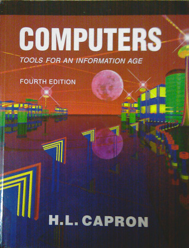

CS3, the intro computer survey class at santa Monica College, is offered every semester. Several sections are available. Nevertheless, the popularity of the class has meant in the past that not all students wanting to take the class could be admitted.
The primary textbook for this course is Computers, Tools for an Information Age by H. L. Capron
 click on the image to see a larger version
Click here for information class web page
The class covers several areas of study: